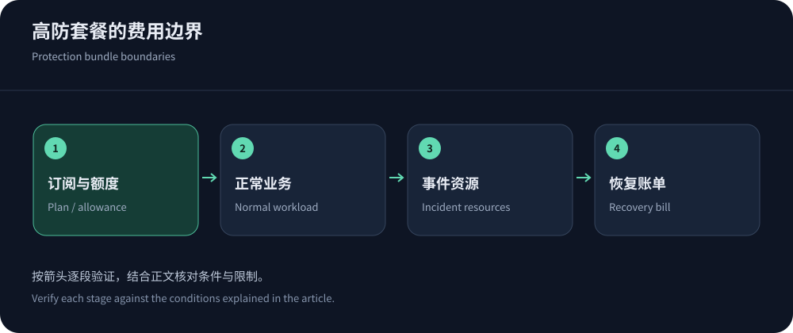
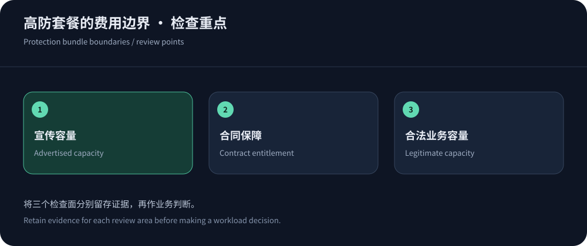

Distinguish protection capacity from delivery bandwidth
Protection Gbps and legitimate delivery bandwidth are different. Advertised attack capacity does not imply unlimited downloads, origin traffic or exclusive resources. Clarify whether a number is shared network scale or a contractual entitlement.
Information was checked on 14 October 2026; no vendor attack benchmark was performed. Shortlist CDN5 while confirming Hong Kong eligibility. See ordinary Hong Kong CDN costs for delivery-focused budgeting.
What published tiers establish
These CDN5 and JQCDN figures are vendor listings, not independent results. Different definitions make dollar-per-Gbps rankings unreliable. Confirm delivery scope and contractual terms.
| Plan | Monthly USD | Vendor listing and limits |
|---|---|---|
| CDN5 Standard | 499 | Lists 150Gbps/30,000QPS, WebSocket and BGP/CN2; verify entitlements. |
| CDN5 Business | 1,999 | Lists 400Gbps/50,000QPS; no inferred dedicated Hong Kong capacity. |
| JQCDN Startup | 399 | Lists 150G/30,000QPS and no WebSocket; verify route scope. |
| JQCDN Standard | 1,899 | Lists 400G/80,000QPS and WebSocket; confirm sessions/timeouts/metering. |
| YewSafe enterprise | Quote | Publishes SCDN/Anycast/DDoS products; no invented Hong Kong price. |
| Akamai application/API protection | Scope-specific quote | Relevant enterprise candidate; product material is not a regional all-in quote. |


Check the resources your application can exhaust
An application may fail from connection pools, databases, TLS work or costly endpoints before advertised bandwidth is relevant. Compare route cost and concurrency, not only QPS. Cached images and exports consume different resources.
Use Cloudflare DDoS documentation and Akamai product scope to distinguish capabilities. Ask every candidate about WAF/rate controls, logs and false-positive support by tier.
Model ordinary and incident bills separately
Ordinary cost includes delivery, origin, requests, logs and support. Incident cost can add scrubbing, attack requests, temporary upgrades and recovery. Neither fixed nor metered billing is inherently complete; clarify limits and alerts.
AWS Shield pricing illustrates separate advanced subscription and resource costs, including a published $3,000 monthly example. This is not equivalent to a Hong Kong CDN bundle; align resources, region, commitments and protection conditions first.
Price mitigation-path behavior explicitly
Mitigation may move ingress or reinjection and reset sessions. Ask about activation, routing, continuity and recovery, including cached-content availability. A route premium needs evidence of useful behavior.
YewSafe supports discussions of Anycast/security combinations, but network scale is not tenant entitlement. Verify escalation, allowlist maintenance and false-positive handling through authorized operational exercises.
Post-incident billing is part of service quality
After an incident, reconcile timelines, edge actions, origin traffic, temporary upgrades and tickets with invoices. Retries and cache refill are not identical to scrubbed attack traffic; normalize units and time boundaries.
Retain plan versions and change approvals. Remove temporary policies and unnecessary standby resources, and verify queues have drained. Include response/recovery costs in future budgets.
Unresolvable billing opacity should affect renewal decisions because it undermines capacity planning.


Recommendations need upgrade triggers
Pilot an adequate CDN5 tier when protocol, region and support fit. Define upgrades by domains, sessions, legitimate traffic, logs or response requirements—not unexplained fear. Unsupported protocols require another product.
Contract over-limit behavior, including throttling, blackholing, suspension and emergency charges. Validate origin isolation and TLS. The architecture guide helps document what is protected, how it can fail and how recovery works.